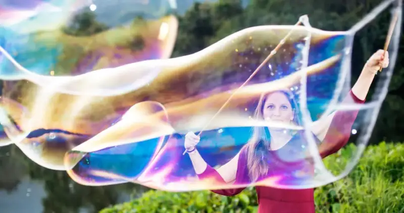
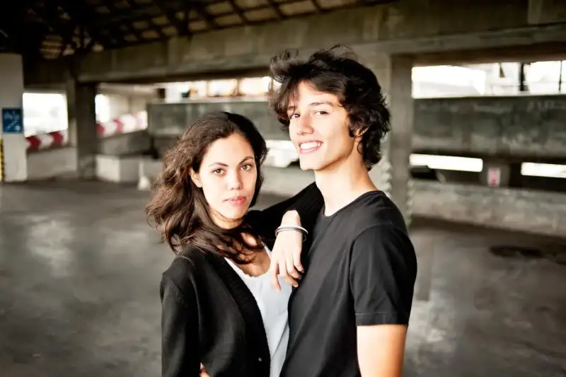
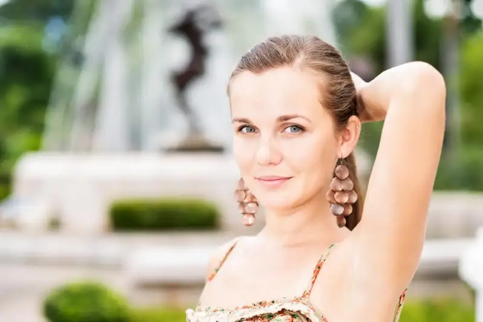
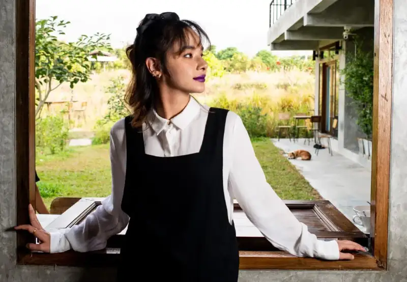
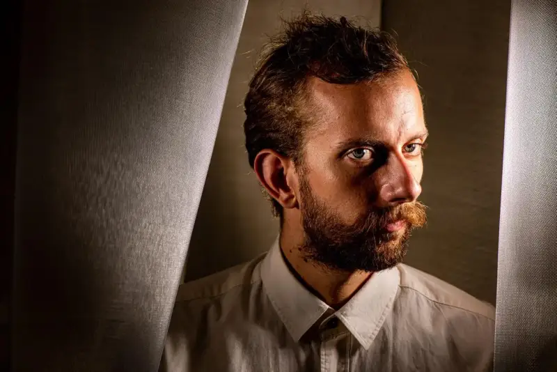
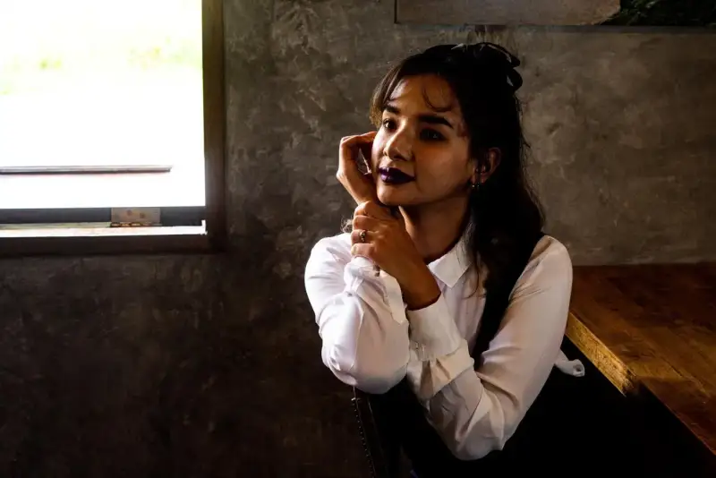

Light is everything in portrait photography. Flat light cannot set the mood you want. High-contrast light is hard to work with. A modest amount of flash gives you more control. It adds layers and dimension to your portraits.
When you add another controllable light source, you can shape the light. You can make more dynamic portraits. Each extra light source makes the shoot more complex. If you fiddle with lights while your subject waits, the portraits will look flat. When your subject gets bored because the setup takes too long, you struggle to catch their best expression. You must watch more details, so good light management matters. It lets you catch the result you want with confidence.
Control flash power and camera exposure
Manual control of the flash and the camera exposure matters. If you let the camera and flash set exposure and power on their own, the result is often disappointing.
Once you know how to adjust by hand, you control how light falls on the subject and the background. If you stay in auto mode, the camera and flash only run a preset. They may not give the look you want. Manual control lets you shape the mood and feeling of the portrait. It also adds depth and dimension.
Manual flash and exposure control is not hard to learn. It does take practice to master. Once you know it, you can shape the flash, the ambient light, and the exposure as you like.

Create contrast between subject and background
Two key points help you create depth in a portrait with flash:
· Create contrast between the subject and the background
· Control depth of field
When you set the controls by hand, you raise or lower the light on the subject to make it stand out from the background.
More light on the subject means the background gets darker. This separates the subject from the background. It draws the viewer's eye to the subject, because the eye goes to the brightest area in the frame.
In this couple portrait, I added flash power to underexpose the background by one to two stops. It separates the couple from the background and creates a sense of space. Think about how much contrast you need between subject and background. Make the subject brighter with flash. It makes the background effect easier to achieve.
Shooting with a shallow depth of field and flash is harder. But once you balance a wide aperture, flash, and ambient light, you get a light and fresh portrait look. Shallow depth of field plus an extra light source gives the portrait dimension.

Use flash direction to create depth in portraits
Where you place the flash is another key skill to learn.
A flash above the subject gives a pleasing look. So when you want more layers in a portrait, use an off-camera flash. You may need a set of flash triggers, or your camera and flash must support wireless communication.
Put the flash to one side of the subject. The light falls unevenly on the face, and this adds dimension. When the flash is stronger than the ambient light, it creates a clear contrast of light and shadow.

In this portrait, I put the flash to the subject's right. I adjusted the settings to balance the outdoor ambient light. It cast a soft shadow on the left side of the frame. The shadow adds dimension and separates the subject from the background.
Lighting tips that add depth to portraits
When you use flash, apply the right composition rules. It strengthens the sense of depth in your portrait photos.
Foreground, midground, and background
When you compose a portrait with a foreground, a midground, and a background, the image feels deeper.
In this portrait, the map in the woman's hands is the foreground. She stands in the midground and is the clear focus of the photo. The red pillars of the temple form the background. I added light only to the subject, so she is a little brighter than the surroundings. This adds layers to the frame.
Leading lines
Leading lines always add depth and dimension to a photo. They work even better with flash.
In this portrait, I added flash only to the subject. I placed it off to the right on purpose, so it did not light the train. The lines of the train draw the eye to the subject. The contrast between the subject and the train in the background also adds layers.
Frame composition
Use a frame-within-a-frame to add space to a portrait. Put the subject inside another frame, and it pulls the viewer's eye into the scene.
In this portrait, I used several flashes to light both the subject and a mesh panel hanging in the studio. The light on the panel made a natural frame around the subject. It adds a unique layer to the portrait. The frame comes only from the contrast of light and shadow. If all the light sources were even, this sense of space would not appear.

Common flash mistakes to avoid
Flash can be complex and even a little scary, especially when you are new to it. You only need a few flash skills and plenty of practice. After you try it enough, you will soon use flash in portraits with ease.
As you practice, note the mistakes you make and improve your technique. Here are a few mistakes I often made when I learned flash portraits:
1. You do not always have to balance flash and ambient light
When you want depth in a portrait, contrast helps. If you measure the ambient light and balance both the camera and the flash to it, you lose contrast. A small change (maybe half a stop) creates a subtle gap between subject and surroundings. You can also push the flash setting hard, so its output far exceeds the ambient light. Deeper shadows add layers and mood to the portrait.
2. Do not let the flash decide how much light you need
Set the flash to auto or TTL, and you have little control over the light it puts out. This usually makes the subject and background evenly exposed. It lowers contrast and reduces the layers in the frame.
When you adjust the flash by hand, you control its power. You can set it brighter or darker than the ambient light. This adds layers to the portrait.

3. Do not use unfiltered flash
Direct, unfiltered flash produces hard light. It often looks poor on portraits. The highlights blow out, and dark, sharp-edged shadows are a common problem.
Bounce the flash, or use a diffuser to spread the light. It gives softer light and softens the hard shadows.
4. Do not use the flash on top of the camera
When the flash sits on top of the camera, it cannot add the depth that a side-placed flash gives. Straight-on flash makes the subject look flat. Put the light to the side of the subject. The shadow it makes adds dimension to the photo.
The key to depth and dimension in flash portraits is control of contrast. Make the subject brighter than the background with flash, and the subject separates on its own. Add depth of field, leading lines, or other composition skills, and you find new layers of depth in your portraits.
Control of your settings matters. Without enough control, the camera and flash often balance the settings on their own. The light becomes even, and depth suffers. Adjust the flash output and exposure settings, and you gain precise control. You can shape the depth you want.
Photography / Kevin Landwer-Johan